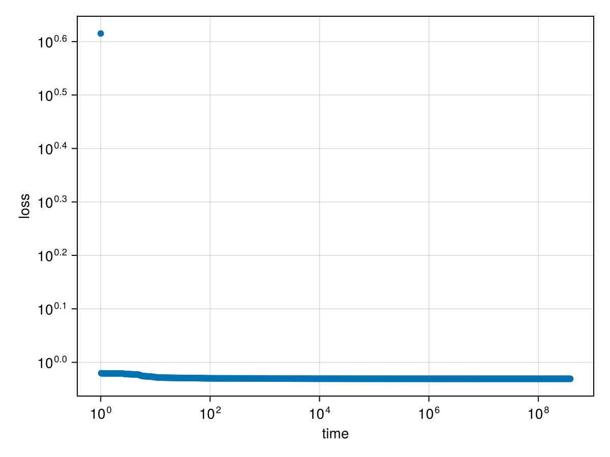

In the following example, we train a network with one hidden layer of 5 softplus neurons on random in- and output.
using MLPGradientFlow, Random
Random.seed!(123)
input = randn(2, 1_000) # 2-dimensional random input
target = randn(1, 1_000) # 1-dimensional random output
net = Net(; layers = ((5, softplus, true), # 5 relu neurons with biases
(1, identity, true)), # 1 identity neuron with bias
input,
target)
p = random_params(net)
result = train(net, p, maxtime_ode = 20., maxtime_optim = 20., n_samples_trajectory = 10^3)Dict{String, Any} with 20 entries:
"gnorm" => 9.42209e-5
"init" => Dict("w1"=>[0.149272 -0.196412 0.0; -0.329254 0.715402…
"x" => Dict("w1"=>[396.171 996.933 -888.63; -1406.78 1380.3 -…
"optim_stopped_by" => "maxtime > 20.0s"
"loss_curve" => [4.12157, 0.954064, 0.953852, 0.953699, 0.953576, 0.95…
"target" => [0.911875 -0.792403 … -0.313917 -1.1881]
"optim_iterations" => 38603
"ode_stopped_by" => "maxtime > 20.0s"
"ode_iterations" => 16668
"optim_time_run" => 20.0003
"converged" => false
"ode_time_run" => 20.0193
"loss" => 0.93138
"input" => [0.808288 -1.10464 … 0.723346 -0.0100866; -1.12207 -0.…
"trajectory" => OrderedDict(0.0=>Dict("w1"=>[0.149272 -0.196412 0.0; -…
"ode_x" => Dict("w1"=>[244.094 615.845 -549.064; -833.909 818.706…
"total_time" => 59.6042
"ode_loss" => 0.931382
"layerspec" => ((5, "softplus", true), (1, "identity", true))
"gnorm_regularized" => 9.42209e-5We see that optimization has found a point with a very small gradient:
gradient(net, params(result["x"]))ComponentVector{Float64}(w1 = [-1.2399317722489296e-10 -1.9941981183248304e-10 -7.150325942019371e-11; -1.0364970301138775e-12 -2.9796412086003966e-10 4.1606870079545e-10; … ; 4.560655728514356e-6 1.0476187182561696e-5 -1.9193333141743095e-5; -2.1959050342742467e-6 -5.393306336695786e-6 8.951574778677696e-6], w2 = [9.422092571951233e-5 3.7170909896383524e-5 … 1.0494774449969048e-8 1.206597189780112e-7])Let us inspect the spectrum of the hessian:
hessian_spectrum(net, params(result["x"]))LinearAlgebra.Eigen{Float64, Float64, Matrix{Float64}, Vector{Float64}}
values:
21-element Vector{Float64}:
3.152716049973368e-13
6.753503402254018e-12
2.6445905645569293e-10
5.160359165946866e-10
1.9407137862029176e-8
5.3241377072448896e-8
1.2598923491457046e-7
1.3866793430448425e-6
0.00041789398694753847
0.0026345541744769935
⋮
0.4989937930923052
8.023553132488136
29.563529702268568
59.645357426348404
108643.2139924147
164038.18158124317
241633.48326646828
1.5543507310776566e6
4.774776622218563e6
vectors:
21×21 Matrix{Float64}:
0.0365527 -0.278925 0.00266524 … 1.7997e-8 4.63362e-9
-0.464043 -0.0603507 -0.00145873 -1.81551e-7 -1.28691e-7
-2.12764e-7 1.26323e-6 7.42129e-6 0.054631 0.363866
-1.68052e-7 -1.14713e-6 -1.22505e-6 -0.0975768 -0.684644
-1.48074e-7 1.71785e-6 -5.93941e-6 0.0429264 0.321098
0.0915 -0.706666 0.00664733 … -4.72891e-8 -8.14366e-9
0.454895 0.0563766 0.00143475 1.42774e-7 4.61996e-8
-2.91996e-8 -1.50709e-7 -4.7885e-6 -0.401438 0.0512187
-5.43305e-8 1.38597e-6 9.28061e-7 0.757154 -0.0989315
-6.11729e-8 -3.86466e-7 3.66123e-6 -0.35604 0.0477822
⋮ ⋱ ⋮
-2.91679e-7 -4.73601e-7 7.1026e-7 0.0360827 -0.21797
-2.80771e-7 -6.35138e-7 -1.23261e-7 -0.0735509 0.40999
-2.73064e-7 -5.32139e-7 -5.91548e-8 0.037523 -0.192187
-2.81037e-8 2.15764e-7 -2.04267e-9 … -0.052853 -0.0072926
1.88702e-7 2.34035e-8 6.28098e-10 -0.336955 -0.168743
-0.00227108 0.0744146 0.503891 2.05019e-5 -0.000450443
0.00344352 0.00546154 -0.808293 2.98818e-5 -0.000441189
-0.00117253 -0.0798733 0.304402 4.00739e-5 -0.000430063
0.0 0.0 0.0 … 6.64152e-5 -0.000320904The eigenvalues are all positive, indicating that we are in a local minimum.
using CairoMakie
function plot_losscurve(result; kwargs...)
f = Figure()
ax = Axis(f[1, 1], yscale = log10, xscale = log10, ylabel = "loss", xlabel = "time", kwargs...)
scatter!(ax, collect(keys(result["trajectory"])) .+ 1, result["loss_curve"])
f
end
plot_losscurve(result)